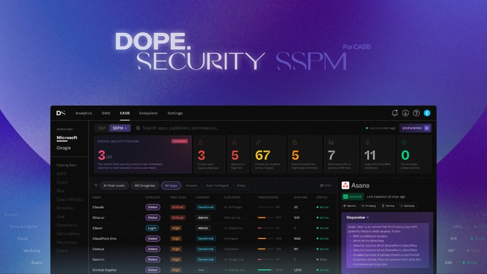
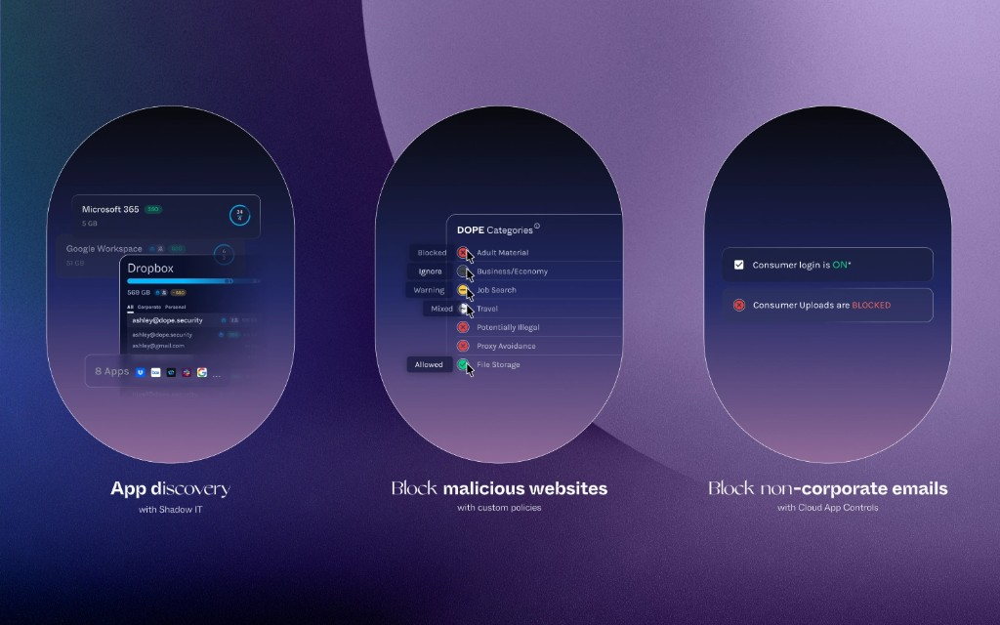

Product design
Designing for Cybersecurity
With enterprise security, complicated was the norm. We challenged that assumption: customers should be able to deploy the product, configure policies, and evaluate it themselves without a sales engineer walking them through every step.

The Work
From concept to deployment.
As the sole product designer, I owned the experience from feature inception and product planning through design, testing, and development.
I worked across concepting/product planning, user flows, interaction design, UI, prototyping, and testing. Early explorations made features tangible; discussions with product and engineering helped expose edge cases and technical constraints before they became expensive decisions. With a limited early user base, we tested prototypes, challenged assumptions, and refined what worked.
My ownership continued through development: working with engineers on behavior, reviewing implementation, and resolving the details between a convincing prototype and a usable product.
